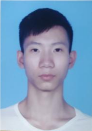

刘利华
职业： 学生
学校： 华南理工大学
联系方式：
llhSCUT@hotmail.com
地址: 广东省广州市天河区五山街道五山路381号华南理工大学北区北八学生宿舍
个人简介：
本人目前就读于华南理工大学电子与信息学院，是信息工程专业的一名大三学生,在2018年入学并就读于学校的轻工科学与工程学院的轻化工程专业，在大二上学期参与学校提供的转专业机会，最后成功通过面试进入重新组建的转专业班级信息工程六班。经过在新学院和新班级的学习，本人对自己的专业知识有了一定的了解，并通过课余时间和同学参加了数学建模、电子设计等比赛，获得了部分奖项。目前已经学习过的语言包括python、java、C++、VB、VHDL和汇编语言等，其中高级语言中对python较为熟悉，其他高级语言并不精通。
| 数学基础课程 | 微积分 | 线性代数 | 概率论与数理统计 | 复变函数 | |
|---|---|---|---|---|---|
| 硬件相关课程 | 电路 | 数电 | 模电 | 高频电子线路 | |
| 编程相关课程 | C++课程设计--C++ | 微机原理--汇编语言 | 数学实验--matlab | 数字系统设计--VHDL硬件语言 | |
| 通信相关课程 | 通信原理 | 电磁场与电磁波 | 信息论 | 信号与系统 | 数字信号处理 |
| 选修相关课程 | 射频电路 | 软件工程 | 数字图像处理 | 嵌入式设计 | 深度学习与计算机视觉 |
参赛以及获奖经历: